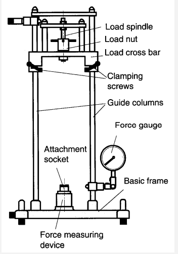
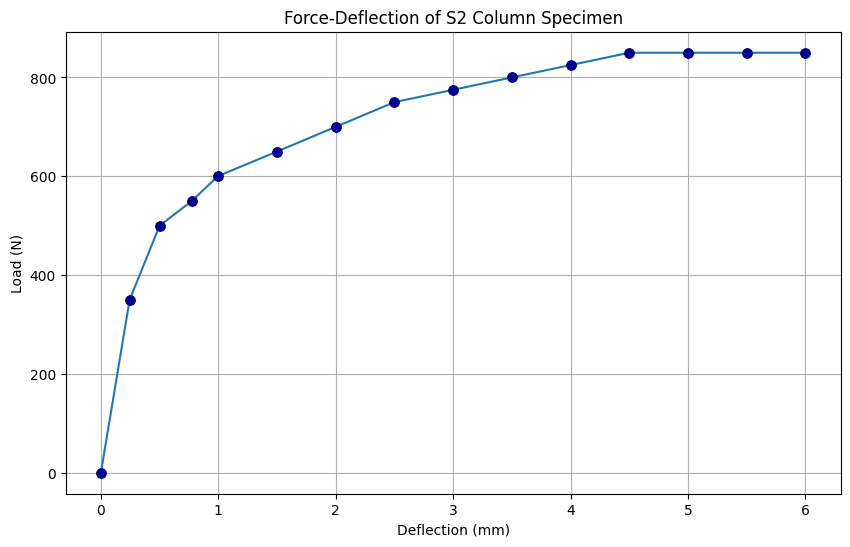

15 / Structural stability testing / Completed laboratory study
AE461 · Four-person laboratory team
Testing how supports, material, and eccentricity affect rod buckling
Ideal column theory assumes supports and loading that a real fixture can only approximate. Our team tested slender rods in compression to separate the effects of end restraint, material stiffness, and eccentric loading. The force–deflection measurements showed where Euler theory described the trend and where fixture imperfections changed the result.
- Team contribution
- Coauthored the buckling-test and Euler-theory comparison
- Tools
- Euler buckling · Force–deflection · Boundary conditions · Experimental mechanics
- Outcome
- Measured stiffness trends supported Euler theory; the fixed–fixed test exposed restraint sensitivity

Separate three causes of instability
A load nut applied axial compression through interchangeable pinned or clamped specimen holders. The frame measured force, while a lateral gauge tracked rod deflection. Recording the full force–deflection response made it possible to distinguish a load plateau from progressive bending.
The support study used similar steel specimens so that the mounting was the main variable. A second comparison held geometry and pinned supports constant while changing material; a third introduced eccentric loading. The analysis used the corresponding effective lengths and weak-axis second moments of area in Euler’s critical-load relation.
Investigate the fixed–fixed discrepancy
Pinned–pinned: 500 N measured / 548.56 N predicted. Fixed–pinned: 950 / 1116.75 N. Fixed–fixed: 710 / 2194.26 N.
The first two arrangements followed the expected increase with stronger restraint. The fixed–fixed specimen did not: it buckled below the fixed–pinned result and far below the ideal fixed–fixed prediction.
The report attributes this departure to imperfect clamping, alignment, initial curvature, and possible load eccentricity. Those are proposed explanations, rather than separately measured causes. The result shows why nominal support labels alone are insufficient to establish an experimental boundary condition.
Read the response beyond a single critical load
Equal-geometry pinned specimens carried 850 N in aluminum, 1100 N in brass, and 1225 N in copper. The increase with the listed Young’s moduli supported the predicted stiffness trend, without demonstrating exact linear agreement.
Greater load eccentricity produced more initial bending and a more gradual loss of stiffness, with the most eccentric specimen carrying the lowest maximum load. This changed the observable response from a sharp idealized buckling event toward a continuous compression-and-bending process.


Outcome and engineering judgment
The team concluded that Euler theory explains the principal influence of stiffness and restraint while real supports and loading imperfections materially affect stability. The fixed–fixed exception is part of that conclusion.
I coauthored this team report. The study provides evidence of comparing measured behavior with an ideal model, controlling comparison variables, and discussing an anomalous result without treating it as a successful match. Individual tests and calculations remain credited to the team.